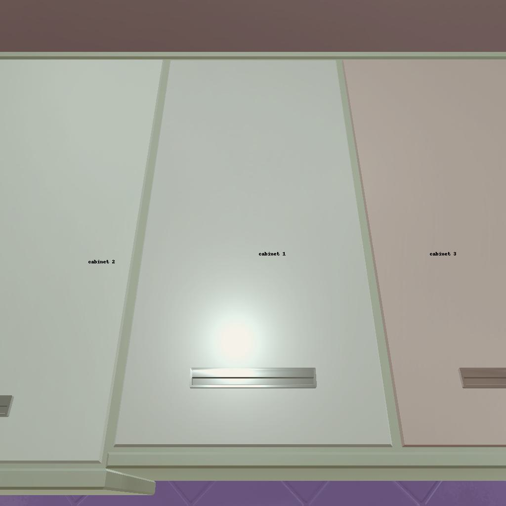

---------------------------------------------------------task: 21---------------------------------------------------------
--------------------------------------------------------------------------------------------------------------------------------------------------------------------
--------------------------------------------------------------------------------------------------------------------------------------------------------------------
Step:--------------------------------------------------------------------------2-------------------------------------------------------------------------------
----------------------------------------
VLM Prompt:
Image1:
**Instruction**
1. Analyze the provided image to identify all visible household objects, focusing on those relevant to the task description "put a hot cup in countertop."
2. Use the analysis of the image and the task hint "The agent must find an object of the desired type, pick it up, go to a microwave, heat the object with the microwave, then find the correct location to place it, and put it down there. The agent does not need to use the microwave button or open the microwave to heat the object, and the agent just needs to do action that is "heat the object with the microwave"." to answer the question: what is the most reasonable action in the choices for the task description "put a hot cup in countertop"?
4. Decide and write the answer using the template: The answer is: (i): , where i is the real number. If there is no desired object in the image, search every place based on **Initial Observation** to find the object. And if no one is exactly correct, choose a similar answer.
**Initial Observation**
You are in the middle of a room. Looking quickly around you, you can see cabinet (1-6), microwave (1), countertop (1-2), coffeemachine (1), toaster (1), sink (1), sinkbasin (1), fridge (1)
**Answer Choices**
(1): go to cabinet 2
(2): go to cabinet 3
(3): go to microwave 1
(4): go to cabinet 4
(5): go to cabinet 5
(6): go to cabinet 6
(7): go to countertop 1
(8): go to coffeemachine 1
(9): go to toaster 1
(10): go to countertop 2
(11): go to sink 1
(12): go to sinkbasin 1
(13): go to fridge 1
(14): open cabinet 1
(15): close cabinet 1
(16): examine cabinet 1
**Answer**
Let's think step by step by following the instructions.
----------------------------------------
----------------------------------------
Original Response:
The task is to put a hot cup on the countertop. To do this, the agent must first find a cup, heat it in the microwave, and then place it on the countertop. In the image provided, there are three visible cabinets labeled cabinet 1, cabinet 2, and cabinet 3.
Since the initial observation mentions that we are looking for a cup, it is likely that the cup could be found inside one of the cabinets. The image does not provide a view of the inside of the cabinets, so we cannot confirm the presence of a cup. Therefore, the agent should search the cabinets.
The most reasonable action from the choices given, based on the task description and initial observation, would be to first open a cabinet to find a cup. Following this logic, the agent should first go to any of the cabinets. The choices (1), (2), and (4) are all actions to go to a cabinet, but the action to open a cabinet is only associated with cabinet 1, which is choice (14): open cabinet 1.
Therefore, the answer is: (14): open cabinet 1.
----------------------------------------
----------------------------------------
>>> Refine Original VLM Response and Get Pure Action: No action
----------------------------------------
-----------------------------------------------------------------
Running time: 10.73889970779419 seconds
Total Money: 7.299440000000004
-----------------------------------------------------------------
-----------------------------------------------------------------
Text Observation:Nothing happens.
-----------------------------------------------------------------
UNSUCCEED